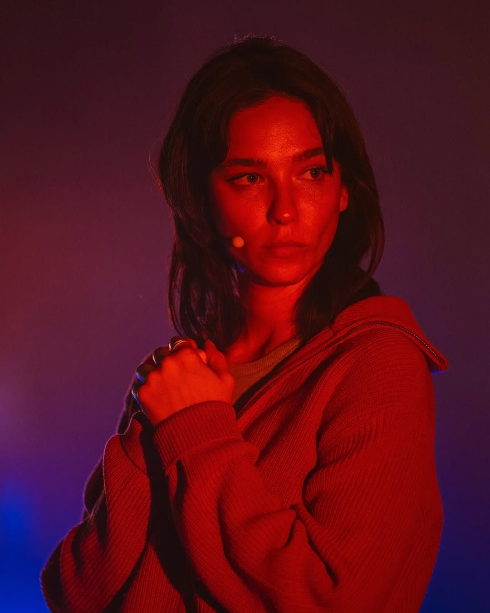
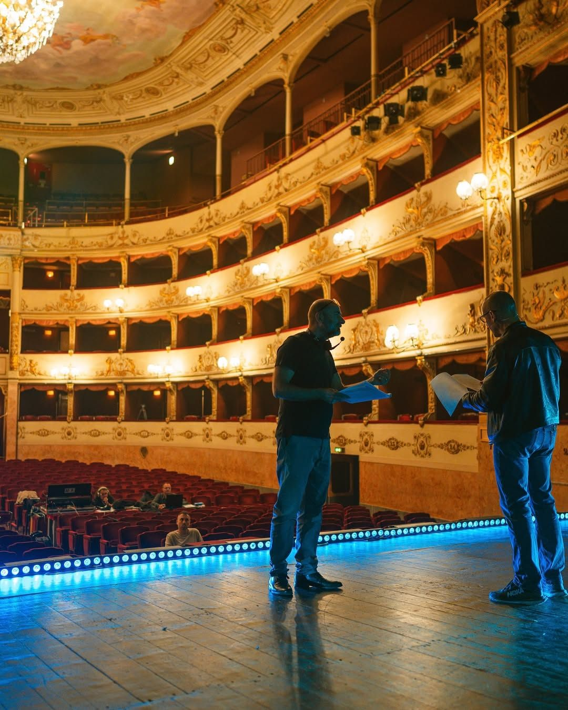
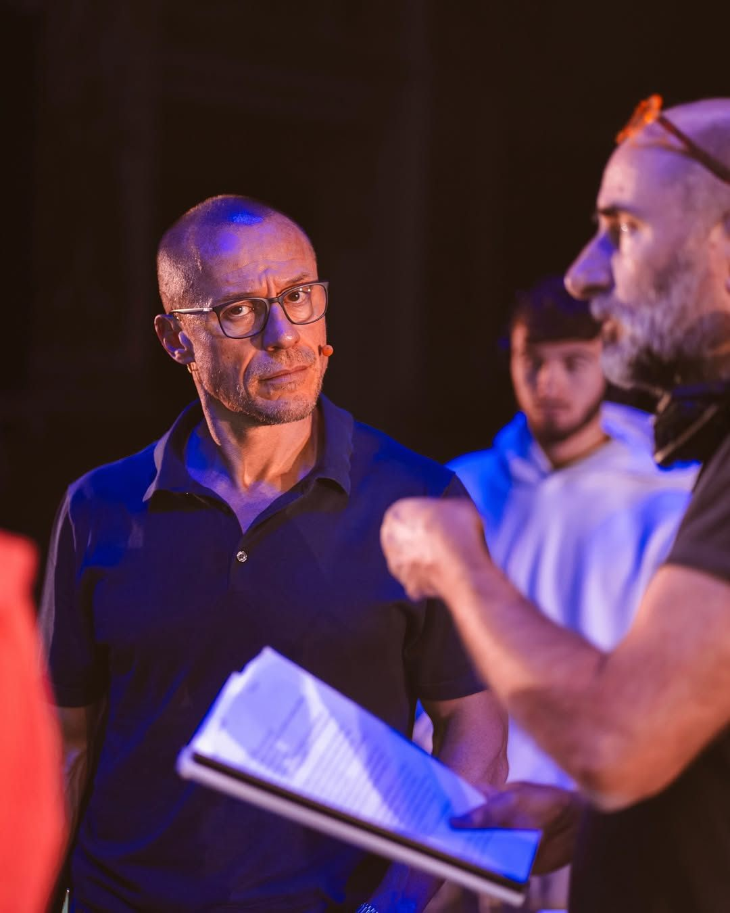
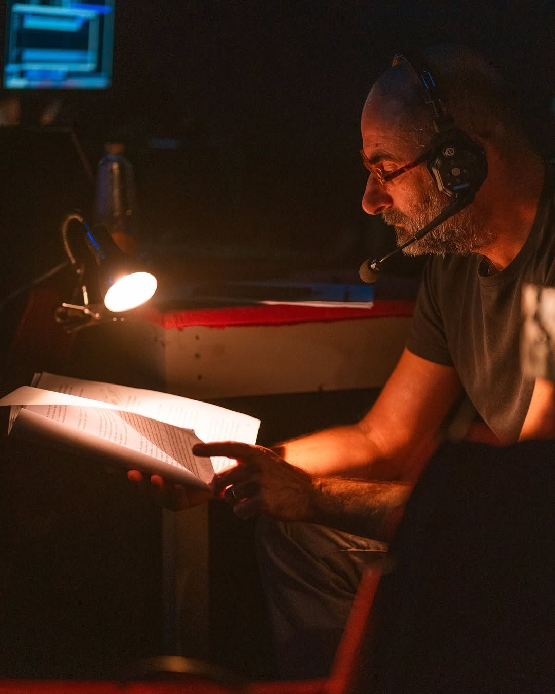
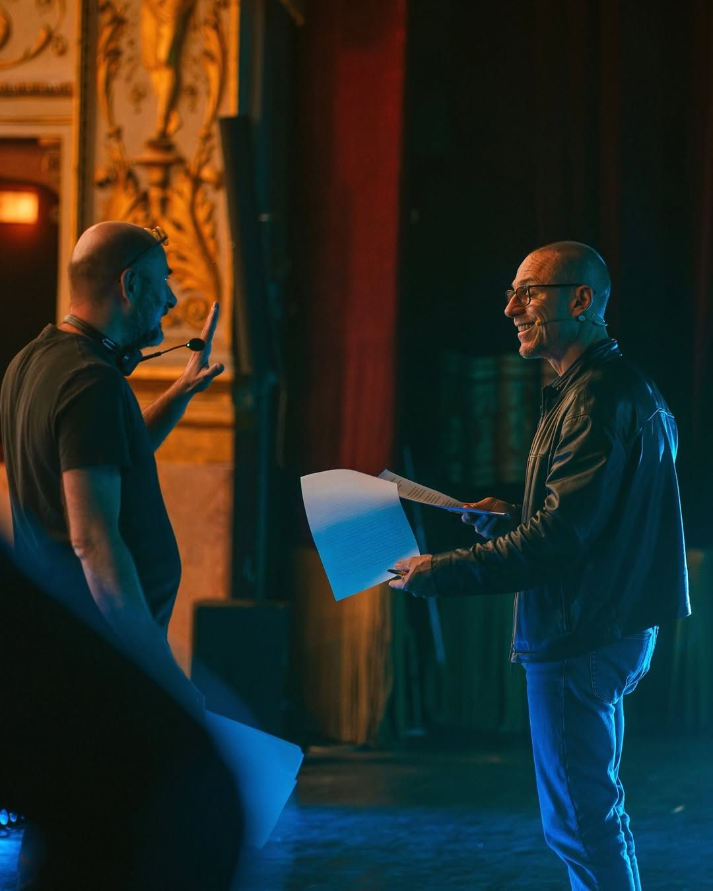
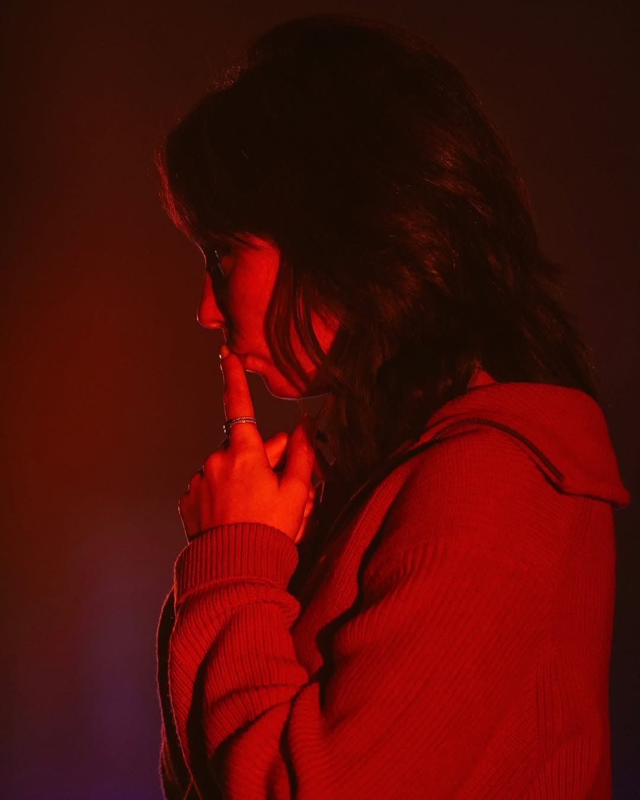
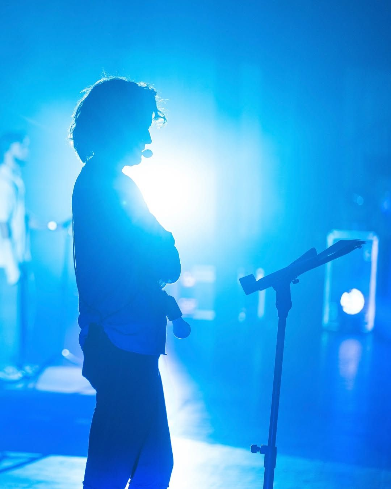

Planetaria — Discorsi con la Terra is a festival that merges theatre, science and art to explore humanity’s relationship with the planet. Cristian Taraborrelli signs the direction and scenic concept for the Conferenza Immaginaria — an immersive theatrical performance that transforms scientific research into living narrative.
Storie dal Futuro della Natura: the future of Puglia between climate crisis and rebirth. Marine heatwaves, as menacing as a future Xylella, threaten the territory. Community protests push politics to enact a revolutionary law: the region transforms into a virtuous ecosystem where nature begins to heal itself.
Planetaria — Discorsi con la Terra è un festival che fonde teatro, scienza e arte per esplorare il rapporto dell’umanità con il pianeta. Cristian Taraborrelli firma la regia e l’idea scenica della Conferenza Immaginaria — uno spettacolo teatrale immersivo che trasforma la ricerca scientifica in narrazione vivente.
Storie dal Futuro della Natura: il futuro della Puglia tra crisi climatica e rinascita. Ondate di calore marino, inquietanti come una Xylella del futuro, minacciano il territorio. Le proteste delle comunità spingono la politica a varare una legge rivoluzionaria: la regione si trasforma in un ecosistema virtuoso, dove la natura torna a curarsi.
Planetaria — Discorsi con la Terra est un festival qui fusionne théâtre, science et art pour explorer la relation de l’humanité avec la planète. Cristian Taraborrelli signe la mise en scène et le concept scénique de la Conferenza Immaginaria — un spectacle théâtral immersif qui transforme la recherche scientifique en récit vivant.
Storie dal Futuro della Natura : l’avenir des Pouilles entre crise climatique et renaissance. Des vagues de chaleur marine, aussi inquiétantes qu’une Xylella du futur, menacent le territoire. Les protestations des communautés poussent la politique à adopter une loi révolutionnaire : la région se transforme en un écosystème vertueux où la nature recommence à se soigner.
La Visione
At the crossroads of theatre and science, Planetaria invents a new format: the Conferenza Immaginaria. Not a lecture, not a play, but a hybrid form where actors, scientists and AI dialogue in real time on stage, transforming data and research into living emotion.
Cristian Taraborrelli’s scenic concept transforms the historic Teatro della Pergola into a sensory environment where light, sound and projection envelop the audience in a journey through possible futures — where the climate crisis becomes narration, and science becomes poetry.
Al crocevia tra teatro e scienza, Planetaria inventa un nuovo formato: la Conferenza Immaginaria. Non una conferenza, non uno spettacolo, ma una forma ibrida dove attori, scienziati e intelligenza artificiale dialogano in tempo reale sulla scena, trasformando dati e ricerca in emozione vivente.
Il concept scenico di Cristian Taraborrelli trasforma lo storico Teatro della Pergola in un ambiente sensoriale dove luce, suono e proiezione avvolgono il pubblico in un viaggio attraverso futuri possibili — dove la crisi climatica diventa narrazione, e la scienza diventa poesia.
Au carrefour du théâtre et de la science, Planetaria invente un nouveau format : la Conferenza Immaginaria. Ni conférence, ni spectacle, mais une forme hybride où acteurs, scientifiques et intelligence artificielle dialoguent en temps réel sur scène, transformant données et recherche en émotion vivante.
Le concept scénique de Cristian Taraborrelli transforme l’historique Teatro della Pergola en un environnement sensoriel où lumière, son et projection enveloppent le public dans un voyage à travers les futurs possibles — où la crise climatique devient narration, et la science devient poésie.
Foto








Team Creativo
Giulio Boccaletti, Maria Tisci
Cast
Tags